概述
- 本文总结Linux 3种零拷贝技术
背景知识 认识DMA
- DMA 技术就是我们在主板上放一块独立的芯片。在进行内存和 I/O 设备的数据传输的时候，我们不再通过 CPU 来控制数据传输，而直接通过 DMA 控制器（DMA Controller，简称 DMAC）。
- 这块芯片，我们可以认为它其实就是一个协处理器（Co-Processor）。
零拷贝技术
零拷贝技术是一个思想，指的是指计算机执行操作时，CPU 不需要先将数据从某处内存复制到另一个特定区域。
可见，零拷贝的特点是 CPU 不全程负责内存中的数据写入其他组件，CPU 仅仅起到管理的作用。但注意，零拷贝不是不进行拷贝，而是 CPU 不再全程负责数据拷贝时的搬运工作。如果数据本身不在内存中，那么必须先通过某种方式拷贝到内存中（这个过程 CPU 可以不参与），因为数据只有在内存中，才能被转移，才能被 CPU 直接读取计算。
零拷贝技术的具体实现方式有很多，例如：
-
sendfile
-
mmap
-
直接 Direct I/O
不同的零拷贝技术适用于不同的应用场景，下面依次进行 sendfile、mmap、Direct I/O 的分析。
不过出于总结性的目的，我们在这里先对下面的技术做一个前瞻性的总结。
-
DMA 技术回顾：DMA 负责内存与其他组件之间的数据拷贝，CPU 仅需负责管理，而无需负责全程的数据拷贝；
-
使用 page cache 的 zero copy：
-
sendfile：一次代替 read/write 系统调用，通过使用 DMA 技术以及传递文件描述符，实现了 zero copy
-
mmap：仅代替 read 系统调用，将内核空间地址映射为用户空间地址，write 操作直接作用于内核空间。通过 DMA 技术以及地址映射技术，用户空间与内核空间无须数据拷贝，实现了 zero copy
-
-
不使用 page cache 的 Direct I/O：读写操作直接在磁盘上进行，不使用 page cache 机制，通常结合用户空间的用户缓存使用。通过 DMA 技术直接与磁盘/网卡进行数据交互，实现了 zero copy
sendfile
发送文件
我们先来回忆一下，服务端发送一个文件给客户端一般需要进行什么操作。一般来说，服务端发送一个文件给客户端的步骤如下：
- 首先需要调用
read读取文件的数据到用户空间缓冲区中。 - 然后再调用
write把缓冲区的数据发送给客户端Socket。
伪代码如下：
while ((n = read(file, buf, 4069)) > 0)
{
write(sock, buf , n);
}
在上面的过程中，调用了 read 和 write 两个系统调用。read 系统调用是从文件中读取数据到用户空间的缓冲区中，所以调用 read 时需要从内核空间复制数据到用户空间，如图 2 所示：
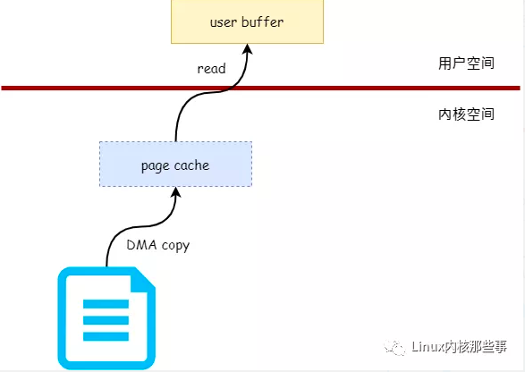
图2 就是数据的复制过程，首先会从文件中读取数据到内核的 页缓存（page cache），然后再从页缓存中复制到用户空间的缓冲区中。
而当调用 write 系统调用把用户空间缓冲区中的数据发送到客户端 Socket 时，首先会把缓冲区的数据复制到内核的 Socket 缓冲区中，网卡驱动会把 Socket 缓冲区的数据发送出去，如图 3 所示：
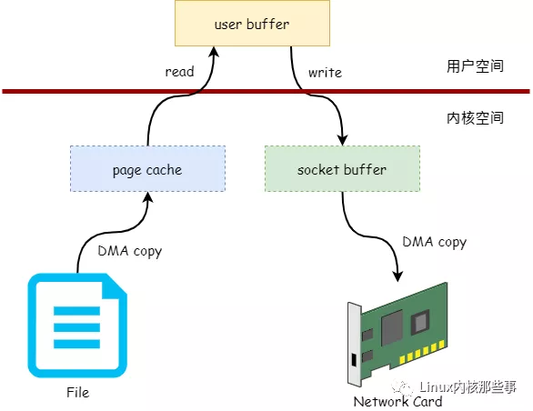
从上图可以看出，服务端发送文件给客户端的过程中需要进行两次数据复制，第一次是从内核空间的页缓存复制到用户空间的缓冲区，第二次是从用户空间的缓冲区复制到内核空间的 Socket 缓冲区。
仔细观察我们可以发现，上图中的页缓存其实可以直接复制到 Socket 缓冲区，而不需要复制到用户空间缓冲区的。如图 4 所示：
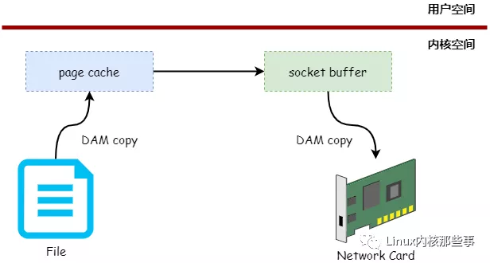
如上图所示，不需要用户空间作为数据中转的技术叫 零拷贝技术。那么，我们可以通过哪个系统调用来实现上图中的技术呢？答案就是 sendfile，我们来看看 sendfile 系统调用的原型：
#include <sys/sendfile.h>
ssize_t sendfile(int out_fd, int in_fd, off_t *offset, size_t count);
下面介绍一下 sendfile 各个参数的作用：
-
out_fd：数据接收方文件句柄（一般为 Socket 句柄）。
-
in_fd：数据提供方文件句柄（一般为文件句柄）。
-
offset：如果 offset 不为 NULL，表示从哪里开始发送数据的偏移量。
-
count：表示需要发送多少字节的数据。
sendfile 发送数据的过程如图 5 所示：
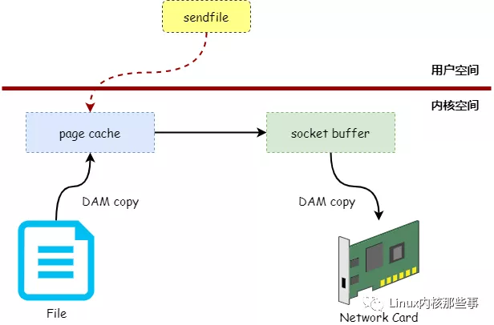
对比图 5 与 图 3，我们发现使用 sendfile 可以减少一次系统调用，并且减少一次数据拷贝过程。
sendfile的应用场景
snedfile 的应用场景是：用户从磁盘读取一些文件数据后不需要经过任何计算与处理就通过网络传输出去。此场景的典型应用是消息队列。
在传统 I/O 下，正如第一节所示，上述应用场景的一次数据传输需要四次 CPU 全权负责的拷贝与四次上下文切换，正如本文第一节所述。
sendfile 主要使用到了两个技术：
-
DMA 技术；
-
传递文件描述符代替数据拷贝。
利用 DMA 技术
sendfile 依赖于 DMA 技术，将四次 CPU 全程负责的拷贝与四次上下文切换减少到两次，如下图所示：
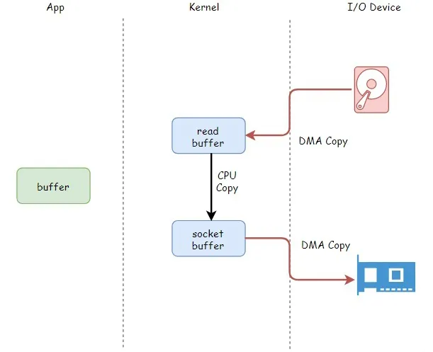
DMA 负责磁盘到内核空间中的 Page cache（read buffer）的数据拷贝以及从内核空间中的 socket buffer 到网卡的数据拷贝。
传递文件描述符代替数据拷贝
传递文件描述可以代替数据拷贝，这是由于两个原因：
-
page cache 以及 socket buffer 都在内核空间中；
-
数据传输过程前后没有任何写操作。
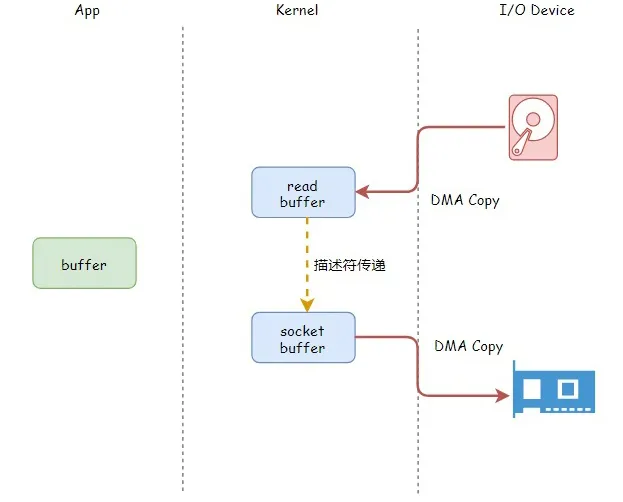
一次系统调用代替两次系统调用
由于 sendfile 仅仅对应一次系统调用，而传统文件操作则需要使用 read 以及 write 两个系统调用。
正因为如此，sendfile 能够将用户态与内核态之间的上下文切换从 4 次减少到 2 次。
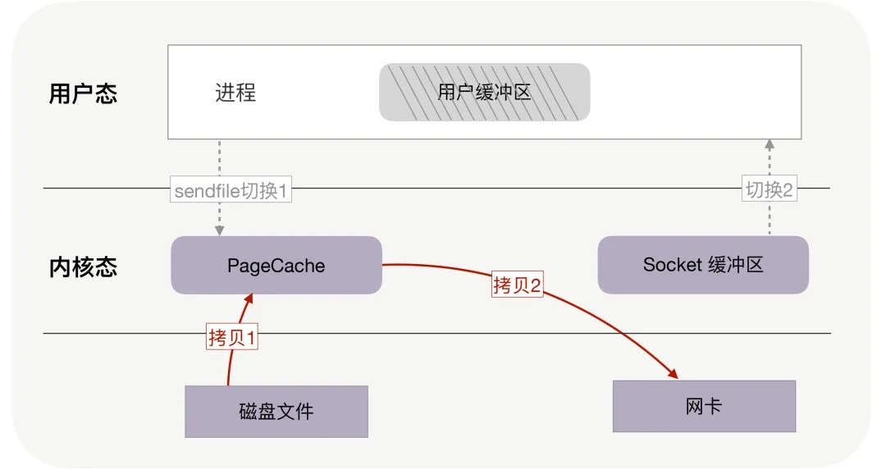
另一方面，我们需要注意 sendfile 系统调用的局限性。如果应用程序需要对从磁盘读取的数据进行写操作，例如解密或加密，那么 sendfile 系统调用就完全没法用。这是因为用户线程根本就不能够通过 sendfile 系统调用得到传输的数据。
mmap
一 传统的读写文件
一般来说，修改一个文件的内容需要如下3个步骤：
- 把文件内容读入到内存中。
- 修改内存中的内容。
- 把内存的数据写入到文件中。
过程如图 1 所示： 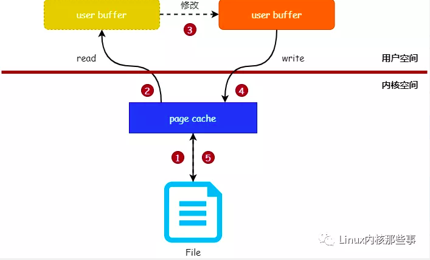
如果使用代码来实现上面的过程，代码如下：
read(fd, buf, 1024); // 读取文件的内容到buf
...// 修改buf的内容
write(fd, buf, 1024); // 把buf的内容写入到文件
从图 1 中可以看出，页缓存(page cache) 是读写文件时的中间层，内核使用 页缓存与文件的数据块关联起来。所以应用程序读写文件时，实际操作的是 页缓存。
二、使用 mmap 读写文件
从传统读写文件的过程中，我们可以发现有个地方可以优化：如果可以直接在用户空间读写 页缓存，那么就可以免去将 页缓存 的数据复制到用户空间缓冲区的过程。
那么，有没有这样的技术能实现上面所说的方式呢？答案是肯定的，就是 mmap。
使用 mmap 系统调用可以将用户空间的虚拟内存地址与文件进行映射（绑定），对映射后的虚拟内存地址进行读写操作就如同对文件进行读写操作一样。原理如图 2 所示：
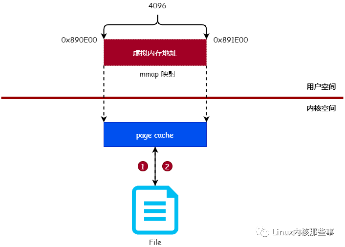
三、mmap的使用方式
下面我们介绍一下怎么使用 mmap，mmap 函数的原型如下：
void *mmap(void *addr, size_t length, int prot, int flags, int fd, off_t offset);
下面介绍一下 mmap 函数的各个参数作用：
- addr：指定映射的虚拟内存地址，可以设置为 NULL，让 Linux 内核自动选择合适的虚拟内存地址。
- length：映射的长度。
- prot：映射内存的保护模式，可选值如下：
- PROT_EXEC：可以被执行。
- PROT_READ：可以被读取。
- PROT_WRITE：可以被写入。
- PROT_NONE：不可访问。
- flags：指定映射的类型，常用的可选值如下：
- MAP_FIXED：使用指定的起始虚拟内存地址进行映射。
- MAP_SHARED：与其它所有映射到这个文件的进程共享映射空间（可实现共享内存）。
- MAP_PRIVATE：建立一个写时复制（Copy on Write）的私有映射空间。
- MAP_LOCKED：锁定映射区的页面，从而防止页面被交换出内存。
- ...
- fd：进行映射的文件句柄。
- offset：文件偏移量（从文件的何处开始映射）。
介绍完 mmap 函数的原型后，我们现在通过一个简单的例子介绍怎么使用 mmap：
int fd = open(filepath, O_RDWR, 0644); // 打开文件
void *addr = mmap(NULL, 8192, PROT_WRITE, MAP_SHARED, fd, 4096); // 对文件进行映射
在上面例子中，我们先通过 open 函数以可读写的方式打开文件，然后通过 mmap 函数对文件进行映射，映射的方式如下：
- addr 参数设置为 NULL，表示让操作系统自动选择合适的虚拟内存地址进行映射。
- length 参数设置为 8192 表示映射的区域为 2 个内存页的大小（一个内存页的大小为 4 KB）。
- prot 参数设置为 PROT_WRITE 表示映射的内存区为可读写。
- flags 参数设置为 MAP_SHARED 表示共享映射区。
- fd 参数设置打开的文件句柄。
- offset 参数设置为 4096 表示从文件的 4096 处开始映射。
mmap 函数会返回映射后的内存地址，我们可以通过此内存地址对文件进行读写操作。我们通过图 3 展示上面例子在内核中的结构：
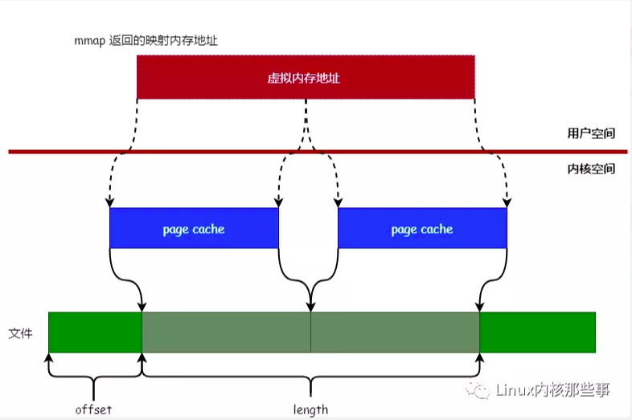
文件同步到磁盘的时机
前面我们介绍过，读写文件都需要经过 页缓存，所以 mmap 映射的正是文件的 页缓存，而非磁盘中的文件本身。由于 mmap 映射的是文件的 页缓存，所以就涉及到同步的问题，即 页缓存 会在什么时候把数据同步到磁盘。
Linux 内核并不会主动把 mmap 映射的 页缓存 同步到磁盘，而是需要用户主动触发。同步 mmap 映射的内存到磁盘有 4 个时机：
- 调用 msync 函数主动进行数据同步（主动）。
- 调用 munmap 函数对文件进行解除映射关系时（主动）。
- 进程退出时（被动）。
- 系统关机时（被动）。
Direct I/O
Direct I/O 即直接 I/O。其名字中的直接二字用于区分使用 page cache 机制的缓存 I/O。
-
缓存文件 I/O：用户空间要读写一个文件并不直接与磁盘交互，而是中间夹了一层缓存，即 page cache；
-
直接文件 I/O：用户空间读取的文件直接与磁盘交互，没有中间 page cache 层。
“直接”在这里还有另一层语义：其他所有技术中，数据至少需要在内核空间存储一份，但是在 Direct I/O 技术中，数据直接存储在用户空间中，绕过了内核。
Direct I/O 模式如下图所示：
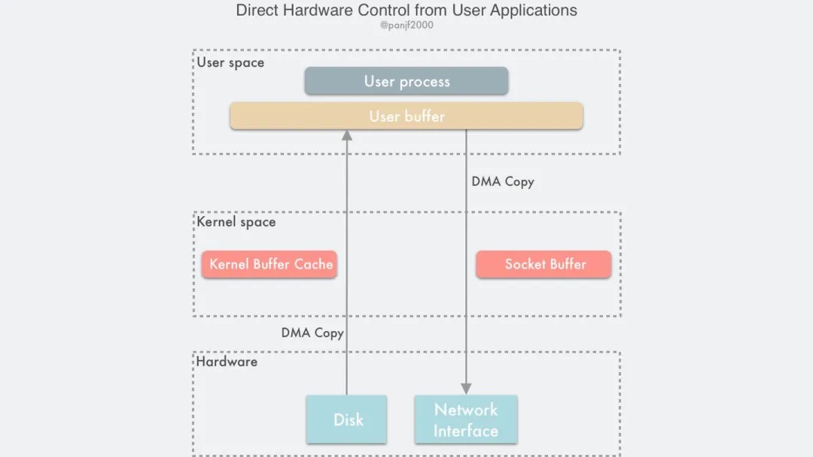
此时用户空间直接通过 DMA 的方式与磁盘以及网卡进行数据拷贝。
Direct I/O 的读写非常有特点：
-
Write 操作：由于其不使用 page cache，所以其进行写文件，如果返回成功，数据就真的落盘了（不考虑磁盘自带的缓存）；
-
Read 操作：由于其不使用 page cache，每次读操作是真的从磁盘中读取，不会从文件系统的缓存中读取。
事实上，即使 Direct I/O 还是可能需要使用操作系统的 fsync 系统调用。为什么？
这是因为虽然文件的数据本身没有使用任何缓存，但是文件的元数据仍然需要缓存，包括 VFS 中的 inode cache 和 dentry cache 等
在部分操作系统中，在 Direct I/O 模式下进行 write 系统调用能够确保文件数据落盘，但是文件元数据不一定落盘。如果在此类操作系统上，那么还需要执行一次 fsync 系统调用确保文件元数据也落盘。否则，可能会导致文件异常、元数据确实等情况。MySQL 的 O_DIRECT 与 O_DIRECT_NO_FSYNC 配置是一个具体案例。
Direct I/O 的优缺点：
优点：
-
Linux 中的直接 I/O 技术省略掉缓存 I/O 技术中操作系统内核缓冲区的使用，数据直接在应用程序地址空间和磁盘之间进行传输，从而使得自缓存应用程序可以省略掉复杂的系统级别的缓存结构，而执行程序自己定义的数据读写管理，从而降低系统级别的管理对应用程序访问数据的影响。
-
与其他零拷贝技术一样，避免了内核空间到用户空间的数据拷贝，如果要传输的数据量很大，使用直接 I/O 的方式进行数据传输，而不需要操作系统内核地址空间拷贝数据操作的参与，这将会大大提高性能。
缺点：
-
由于设备之间的数据传输是通过 DMA 完成的，因此用户空间的数据缓冲区内存页必须进行 page pinning（页锁定），这是为了防止其物理页框地址被交换到磁盘或者被移动到新的地址而导致 DMA 去拷贝数据的时候在指定的地址找不到内存页从而引发缺页错误，而页锁定的开销并不比 CPU 拷贝小，所以为了避免频繁的页锁定系统调用，应用程序必须分配和注册一个持久的内存池，用于数据缓冲。
-
如果访问的数据不在应用程序缓存中，那么每次数据都会直接从磁盘进行加载，这种直接加载会非常缓慢。
-
在应用层引入直接 I/O 需要应用层自己管理，这带来了额外的系统复杂性。
谁会使用 Direct I/O？
IBM的一篇文章[2]指出，自缓存应用程序（ self-caching applications）可以选择使用 Direct I/O。
自缓存应用程序
对于某些应用程序来说，它会有它自己的数据缓存机制，比如，它会将数据缓存在应用程序地址空间，这类应用程序完全不需要使用操作系统内核中的高速缓冲存储器，这类应用程序就被称作是自缓存应用程序（ self-caching applications ）。
例如，应用内部维护一个缓存空间，当有读操作时，首先读取应用层的缓存数据，如果没有，那么就通过 Direct I/O 直接通过磁盘 I/O 来读取数据。缓存仍然在应用，只不过应用觉得自己实现一个缓存比操作系统的缓存更高效。
数据库管理系统是这类应用程序的一个代表。自缓存应用程序倾向于使用数据的逻辑表达方式，而非物理表达方式；当系统内存较低的时候，自缓存应用程序会让这种数据的逻辑缓存被换出，而并非是磁盘上实际的数据被换出。自缓存应用程序对要操作的数据的语义了如指掌，所以它可以采用更加高效的缓存替换算法。自缓存应用程序有可能会在多台主机之间共享一块内存，那么自缓存应用程序就需要提供一种能够有效地将用户地址空间的缓存数据置为无效的机制，从而确保应用程序地址空间缓存数据的一致性。
另一方面，目前 Linux 上的异步 IO 库，其依赖于文件使用 O_DIRECT 模式打开，它们通常一起配合使用。
如何使用 Direct I/O？
用户应用需要实现用户空间内的缓存区，读/写操作应当尽量通过此缓存区提供。如果有性能上的考虑，那么尽量避免频繁地基于 Direct I/O 进行读/写操作。
总结
DMA 技术的推出使得内存与其他组件，例如磁盘、网卡进行数据拷贝时，CPU 仅仅需要发出控制信号，而拷贝数据的过程则由 DMA 负责完成。
Linux 的零拷贝技术有多种实现策略，但根据策略可以分为如下几种类型：
-
减少甚至避免用户空间和内核空间之间的数据拷贝：在一些场景下，用户进程在数据传输过程中并不需要对数据进行访问和处理，那么数据在 Linux 的 Page Cache 和用户进程的缓冲区之间的传输就完全可以避免，让数据拷贝完全在内核里进行，甚至可以通过更巧妙的方式避免在内核里的数据拷贝。这一类实现一般是是通过增加新的系统调用来完成的，比如 Linux 中的 mmap()，sendfile() 以及 splice() 等。
-
绕过内核的直接 I/O：允许在用户态进程绕过内核直接和硬件进行数据传输，内核在传输过程中只负责一些管理和辅助的工作。这种方式其实和第一种有点类似，也是试图避免用户空间和内核空间之间的数据传输，只是第一种方式是把数据传输过程放在内核态完成，而这种方式则是直接绕过内核和硬件通信，效果类似但原理完全不同。
-
内核缓冲区和用户缓冲区之间的传输优化：这种方式侧重于在用户进程的缓冲区和操作系统的页缓存之间的 CPU 拷贝的优化。这种方法延续了以往那种传统的通信方式，但更灵活。